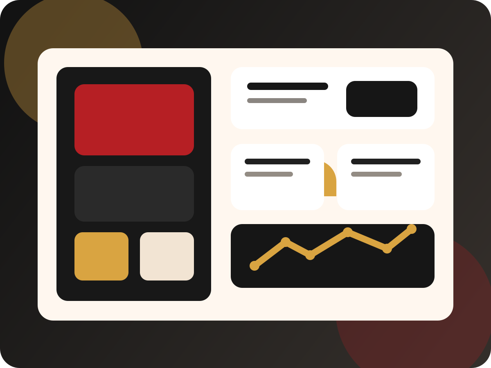

Projekt 04 · CRM / Growth
Dieses Projekt übersetzt Social-Media-Interesse in eine Landingpage, die Leads sammelt, Zielgruppen einordnet und eine professionelle Welcome-Mail-Automation vorbereitet. So wird aus Aufmerksamkeit ein CRM-Einstieg.

Performance Snapshot
Landingpage
Funnel-Architektur
Kurze Reels oder Storys mit Produkt, Drop oder Matchday-Moment erzeugen Aufmerksamkeit und Klicks.
Die Landingpage reduziert Reibung, erklärt den Nutzen und sammelt strukturierte Leads für CRM und Newsletter.
Nach der Anmeldung startet ein professioneller Erstkontakt, der Bindung, Rückkehr und spätere Shop-Besuche erhöht.
Warum das relevant ist
Das Projekt zeigt nicht nur Content-Denken, sondern auch Lead-Aufbau, Segmentierung und CRM-Logik.
Newsletter und Social Funnels lassen sich mit neuen Drops, Aktionen, Matchdays und Sortiments-Highlights verbinden.
Mit einem Save-Endpoint und EmailJS kann der Demo-Flow in einen echten, produktiven Prozess überführt werden.